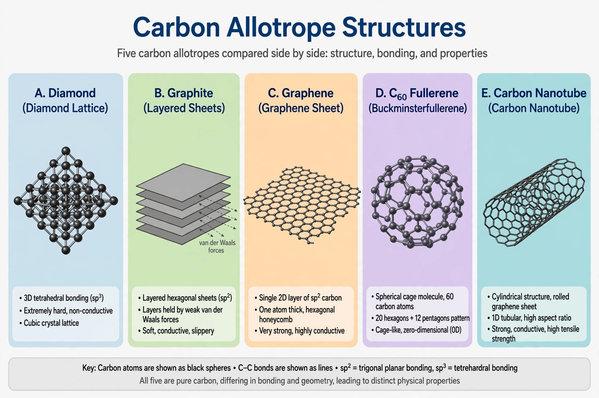

| Element | Carbon (atomic number 6) |
|---|---|
| Main forms | Diamond, graphite, graphene, fullerenes, carbon nanotubes, amorphous carbon |
Allotropes of carbon are the different structural forms in which the element carbon can exist. Carbon is notable for the diversity of its allotropes, a consequence of its ability to form strong covalent bonds in several hybridisation states (sp³, sp² and sp) and to build chains, sheets, cages and tubes of atoms.
In diamond, each carbon atom is bonded tetrahedrally (sp³) to four neighbours, forming a rigid three-dimensional network that makes diamond one of the hardest natural materials, an excellent thermal conductor and an electrical insulator with a wide band gap. In graphite, atoms are bonded in planar hexagonal sheets (sp²) held together only by weak van der Waals forces, so the layers slide easily: graphite is soft, an electrical conductor along the sheets, and is used in pencils and lubricants. The two forms are an everyday illustration of how structure determines properties.
A single graphite sheet is graphene, isolated in 2004 by Andre Geim and Konstantin Novoselov, whose strength and electronic properties — its charge carriers behave as massless relativistic particles — earned the 2010 Nobel Prize in Physics. Wrapping a graphene sheet into a closed cage gives the fullerenes, beginning with buckminsterfullerene (C₆₀), discovered in 1985 by Kroto, Curl and Smalley; rolling it into a cylinder gives carbon nanotubes, exceptionally strong fibres with metallic or semiconducting character. Other known or proposed forms include lonsdaleite (hexagonal diamond), carbyne (chains of sp carbon), carbon nanofoam, glassy carbon and amorphous carbons such as soot, charcoal and activated carbon.